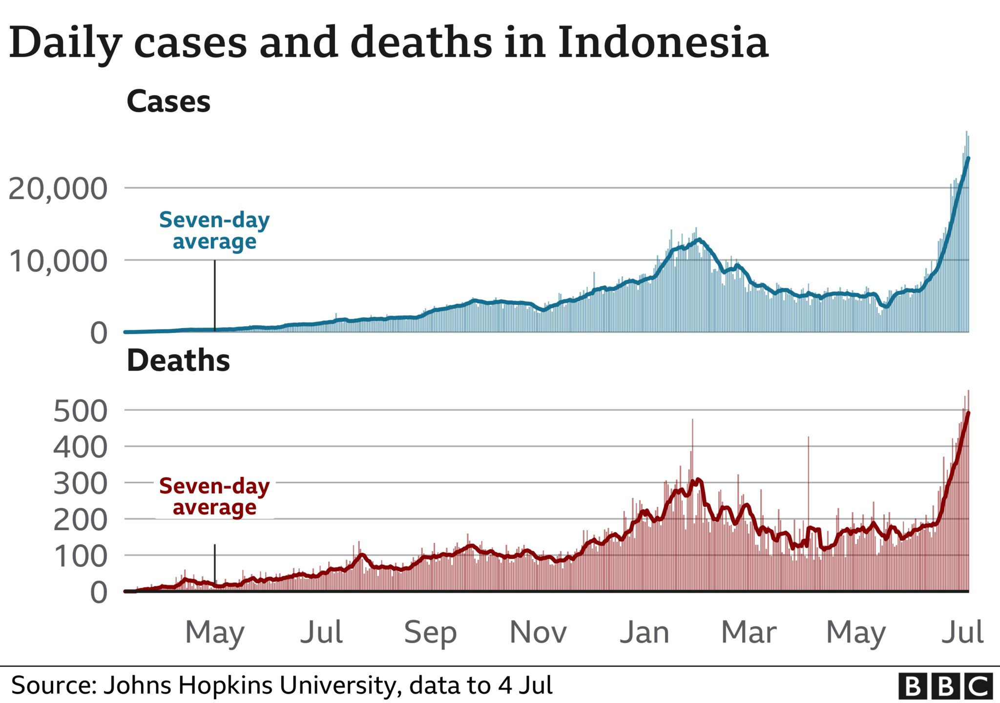

COVID-19 recoveries climb by 319: task force
Posted By: Admin On March 27th, 2023 In News.

The number of COVID-19 recoveries rose by 319 on Saturday, taking the total tally to 6,578,261, the COVID-19 Handling Task Force reported on Saturday. According to data received from the task force here, the provinces that recorded the highest number of COVID-19 recoveries on Saturday were West Java, with 132 recoveries, followed by Jakarta (87), Banten (36), East Java (27), and Central Java (9). Meanwhile, Indonesia recorded 436 confirmed positive cases of COVID-19 on Saturday. The provinces that contributed the most additional cases were Jakarta, with 173 cases, followed by West Java (108), East Java (53), Banten (43), and Central Java (19). With the addition of 436 cases, the total number of COVID-19 cases in the country touched 6,743,607.

On Saturday, Indonesia recorded 9 COVID-19 deaths: 2 from Jakarta, 2 from West Java, 2 from East Java, and 3 from Central Java. The task force further reported that the number of active COVID-19 cases, namely people who are still undergoing treatment or isolation, rose by 108 to reach 4,352. Meanwhile, out of the total target of 234,666,020 people, the first COVID-19 vaccine dose had been administered to 203,820,924 Indonesians, and the second dose to 174,850,112. Further, as many as 68,606,810 people had received the third dose or first booster and 3,060,600 people had received the fourth dose or second booster.
The Coordinating Ministry for Human Development and Culture has urged the community to continue complying with the health protocols. The ministry's assistant deputy for the improvement of health services Nia Reviani said that the emergence of new COVID-19 sub-variants is a reminder that the pandemic has not ended yet. Thus, all parties must continue to pay attention to the implementation of the health protocols. The ministry has also continued to encourage synergy and cooperation among various sectors for the handling of the COVID-19 pandemic, especially in increasing the tracing, testing, and treatment (3T) efforts.